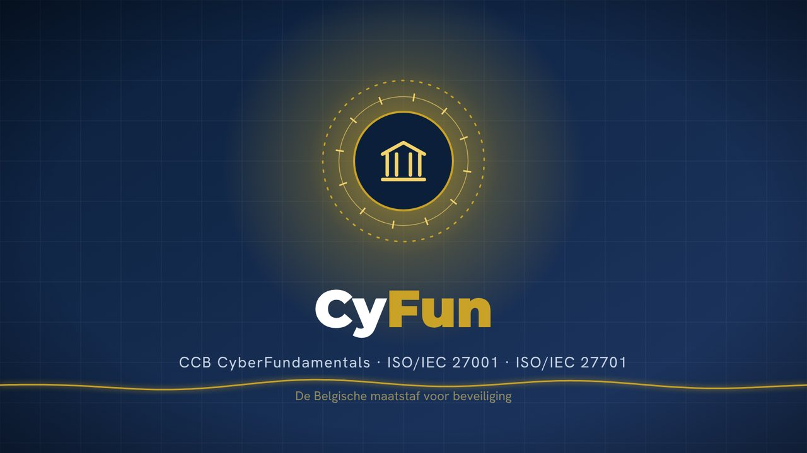

ARG
ARGARGOS › Regelgeving in 4 minuten › CyFun en ISO
CyFun en ISO in 4 minuten: Bewijs is geen formulier
CyberFundamentals steunt op de internationale norm ISO 27001, aangevuld met ISO 27701 voor privacy. Dat is de maatstaf, tot er een Europees cloudschema is. En bewijs is geen formulier.

- 0:00De opdracht
- 0:10CyberFundamentals
- 0:26Het bewijs
- 0:42Het kader
- 0:55ISMS-cyclus
- 1:0893 maatregelen
- 1:19Het bewijs
- 1:40Wie vraagt het
- 1:50Het CCB
- 2:06Wat te doen
Kerngegevens
- CyFun CyberFundamentals · Centrum voor Cybersecurity België
- ISO 27001 informatiebeveiliging
- ISO 27701 privacymanagement
- CyFun het Belgische kader, drie niveaus
- EUCS Europees schema, in onderhandeling
- Reikwijdte Systemen en diensten
- Risico's Voorafgaande analyse
- Toepasselijkheid Elke maatregel verantwoorden
Transcriptie
Volledige tekst van de voice-over
0:00 · De opdracht
Een overheidsopdracht. Een clouddienst. Een perfecte offerte. En één regel in het bestek. Voldoet u aan CyberFundamentals?
0:10 · CyberFundamentals
In België heet de maatstaf CyberFundamentals, het kader van het Centrum voor Cybersecurity België. Samen met ISO 27001 geldt het als vermoeden van conformiteit met NIS2. Zonder bewijs blijven veel deuren dicht.
0:26 · Het bewijs
En bewijs is geen formulier. De reikwijdte bepalen. De risico's analyseren. Elke maatregel verantwoorden in de verklaring van toepasselijkheid. Een onafhankelijke audit doorstaan. En die regelmatig herhalen.
0:42 · Het kader
CyberFundamentals steunt op de internationale norm ISO 27001, aangevuld met ISO 27701 voor privacy. Dat is de maatstaf, tot er een Europees cloudschema is.
0:55 · ISMS-cyclus
Een managementsysteem voor informatiebeveiliging volgt een cyclus. Context en reikwijdte. Risicobeoordeling en behandeling. Invoering van de maatregelen. En audit en continue verbetering.
1:08 · 93 maatregelen
ISO 27001 bevat 93 beheersmaatregelen in vier thema's. Organisatorisch. Mensgericht. Fysiek. En technologisch.
1:19 · Het bewijs
Het bewijs in één oogopslag. ISO 27001: het managementsysteem voor informatiebeveiliging. ISO 27701: het managementsysteem voor privacy. CyberFundamentals: het Belgische kader, in drie niveaus. En het Europese schema, nog in onderhandeling.
1:40 · Wie vraagt het
Wie vraagt het? De overheden. NIS2-entiteiten. Banken en verzekeraars. Ziekenhuizen. En bedrijven die cloud inkopen.
1:50 · Het CCB
Daarachter staat het CCB, de nationale certificeringsautoriteit. Het publiceert CyberFundamentals. Erkende instanties controleren de conformiteit. En Europa onderhandelt over een nieuwe cyberbeveiligingsverordening en het cloudschema.
2:06 · Wat te doen
Wat nu te doen. Reikwijdte bepalen, risico's beoordelen, de certificering plannen en weten waar de gevoelige data staan. ARGOS houdt toepasselijkheid en bewijs actueel, en koppelt ze aan NIS2, de AVG en de AI-verordening, zonder dubbel werk. CyberFundamentals en ISO: vertrouwen dat je kunt aantonen.
Veelgestelde vragen
Wat is CyFun en ISO?
CyberFundamentals steunt op de internationale norm ISO 27001, aangevuld met ISO 27701 voor privacy. Dat is de maatstaf, tot er een Europees cloudschema is. In België heet de maatstaf CyberFundamentals, het kader van het Centrum voor Cybersecurity België. Samen met ISO 27001 geldt het als vermoeden van conformiteit met NIS2. Zonder bewijs blijven veel deuren dicht.
Wat vraagt CyFun en ISO?
Een managementsysteem voor informatiebeveiliging volgt een cyclus. Context en reikwijdte. Risicobeoordeling en behandeling. Invoering van de maatregelen. En audit en continue verbetering.
Wat zijn de belangrijke data?
Het bewijs in één oogopslag. ISO 27001: het managementsysteem voor informatiebeveiliging. ISO 27701: het managementsysteem voor privacy. CyberFundamentals: het Belgische kader, in drie niveaus. En het Europese schema, nog in onderhandeling.
Wat geldt er in België?
En bewijs is geen formulier. De reikwijdte bepalen. De risico's analyseren. Elke maatregel verantwoorden in de verklaring van toepasselijkheid. Een onafhankelijke audit doorstaan. En die regelmatig herhalen. Daarachter staat het CCB, de nationale certificeringsautoriteit. Het publiceert CyberFundamentals. Erkende instanties controleren de conformiteit. En Europa onderhandelt over een nieuwe cyberbeveiligingsverordening en het cloudschema.
Wat moet een bedrijf nu doen?
Wat nu te doen. Reikwijdte bepalen, risico's beoordelen, de certificering plannen en weten waar de gevoelige data staan. ARGOS houdt toepasselijkheid en bewijs actueel, en koppelt ze aan NIS2, de AVG en de AI-verordening, zonder dubbel werk. CyberFundamentals en ISO: vertrouwen dat je kunt aantonen.
Officiële bronnen
- ISO/IEC 27001
- ISO/IEC 27701
- Centrum voor Cybersecurity België (CCB)
- Regelgevingsfiches van Software in a Box
Ga verder met
 AVG
AVGAVG in 4 minuten: Er wordt vooral beboet op de basis
 EHDS
EHDSEHDS in 4 minuten: Voor ziekenhuizen en fabrikanten
 AI-verordening
AI-verordeningAI-verordening in 4 minuten: België: rechtstreeks van toepassing, wet ontbreekt
Stem en muziek gegenereerd met kunstmatige intelligentie (art. 50 AI-verordening). Algemene informatie, geen juridisch advies; stand van zaken november 2026, volgens de regelgevingsfiches van Software in a Box. Videoclips onder licentie van Envato.
Deze presentatie insluiten op een andere website: <iframe src="https://argos.softwareinabox.eu/nl-be/regelgeving/cyfun-iso-27001/presentacion/?embed=1" width="960" height="540" allow="autoplay; fullscreen" title="CyFun en ISO in 4 minuten: Bewijs is geen formulier"></iframe> met een link naar deze pagina.
Ook beschikbaar in: EspañolDeutschFrançaisFrançais (Belgique)ItalianoNederlandsPortuguêsDansk